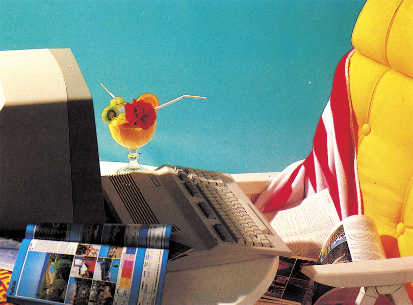

Ferienzeit — Computerzeit
Für einen interessanten Computer-Urlaub müssen Sie nicht weit reisen. Erholung bei Sonne und mit Computer finden Sie auch in Deutschland, zum Beispiel im Schwarzwald...

Immer mehr Jugendliche wollen auch in den Ferien nicht auf ihren Computer verzichten. Auf diese Wünsche hat sich CompuCamp eingestellt. Seit drei Jahren ist Schloß Dankern das Stichwort für Computerfreaks unter zwanzig. Seit diesem Jahr gibt es auch ein Camp in Süddeutschland u im Schwarzwald am Titisee. Doch lassen wir Thomas erzählen, der über Ostern in der Jugendherberge Veltishof »computern« war...
Es ist kalt und es liegt noch Schnee hier am Titisee. Mit 12 weiteren Jungs will ich in der nächsten Woche mehr über meinen Computer lernen. Den Computerkurs schenkten mir meine Eltern als »Österei«. Zwei verschiedene Kurse werden uns von Klaus — unserem Kursleiter — angeboten. Basic 1 für Einsteiger und Basic 2 für Fortgeschrittene. Ich habe mich für Basic 2 entschieden.
Als erstes werden wir gefragt, welchen Computer wir zu Hause benutzen. Denn im CompuCamp soll — soweit möglich — jeder mit dem Gerät arbeiten, das er schon kennt.
Basic am Titisee
Wenn man die Räume des CompuCamps im Keller der Jugendherberge betritt, dann sehen diese auf den ersten Blick aus wie in der Schule. Vorne eine Tafel, an der Klaus die Probleme bespricht. Dahinter, auf den Schülertischen, die Computer. Wenn doch nur mein Gymnasium genauso interessant wäre! Klaus hat für Jeden Zeit und hilft, alle möglichen Probleme zu lösen.
Heute morgen haben wir uns zuerst mit indizierten Variablen beschäftigt. Dazu gab's eine kleine Aufgabe zu lösen. Die Lösung von Klaus (es gibt zu jeder Aufgabe ein Listing) ist zwar ganz anders, aber er meint, daß mein Programm noch besser sei, als das seine.
Stringbearbeitung ist das nächste Thema. RIGHTS, LEFT$ und MID$ heißen die neuen Befehle. So ganz kapiert habe ich die ja zuerst nicht, aber vielleicht verstehe ich das besser, wenn ich das Ubungsprogramm geschrieben habe. Die Aufgabe lautet:
Ein beliebiger Satz soll eingegeben werden und der Computer muß die Zahl der Wörter und die Wörter einzeln mit ihrer Buchstabenzahl auf den Bildschirm schreiben. Die Eingaberoutine ist schnell programmiert. Aber wie kann man die Zahl der Wörter bestimmen? Da habe ich keine Ahnung. Jetzt istes gut, daß der Kursleiter Zeit für jeden von uns hat. Denn, daß man nur auf die Leerzeichen zwischen den Wörtern achten und eins dazu zählen muß — schon hat man die gesamte Zahl — darauf wäre ich so schnell nicht gekommen.
Computercamp, das heißt hier aber nicht nur computern. Von Tennis über Schwimmen bis Skifahren gibt es fast nichts, was man nicht machen kann.
Übermorgen gehen wir auf den Feldberg.
Mit über 1400 Meter ist er der höchste Berg im Schwarzwald. Bei solchen Fahrten wird der Computerraum zugesperrt. Normalerweise dürfen wir uns aber fast immer an die Geräte setzen und programmieren — oder spielen. Aber bei Fahrten oder anderen Unternehmungen, da sollen wir mit der Gruppe gemeinsam etwas machen. Klaus sagt, daß wir sonst gar nicht vom Computer wegkommen würden.
So, jetzt muß ich aber aufhören, denn heute habe ich Küchendienst. Eigentlich wollte ich ja gar nicht — schließlich habe ich ja Ferien. Aber da gab es kein Pardon. Und komisch — in einer solchen Gruppe macht sogar so eine Arbeit richtig Spaß.
Im Sommer werde ich sicher wieder ein Compu-Camp besuchen. Es ist toll, die Ferien in einer Gruppe zu verbringen und trotzdem noch mit dem Computer zu arbeiten. Im Sommer möchte ich aber einen Maschinensprache-Kurs mitmachen. Es gibt einen Kurs für den 6502-Prozessor, wie er in den Commodore-Computern 64 und 128 sowie den kleinen Ataris eingebaut ist. Ein anderer Kurs beschäftigt sich mit dem Z80-Prozessor.
Ich freue mich jedenfalls schon mächtig auf das nächste Mal.
(Thomas Rosner/hg/nj)